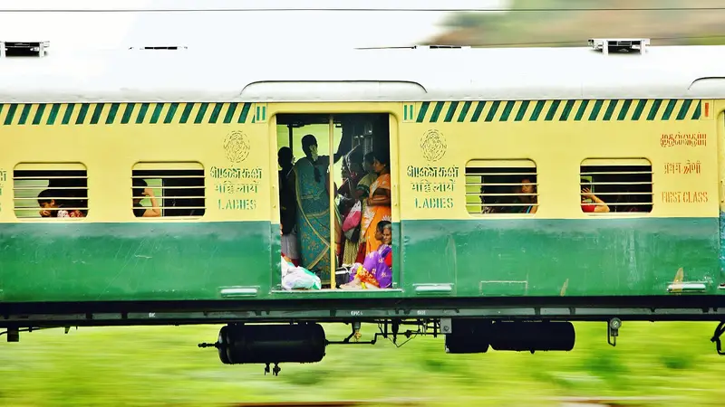
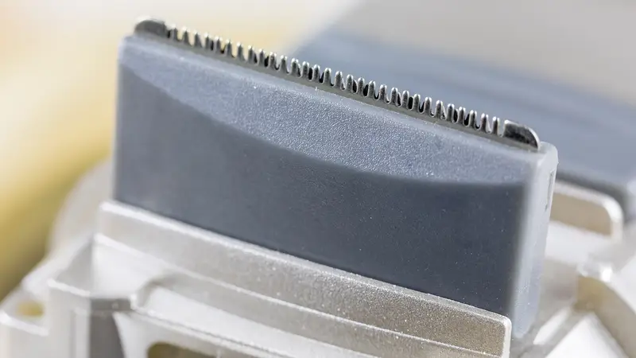
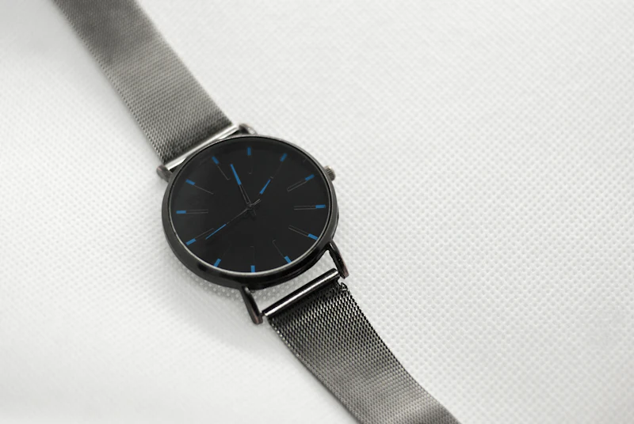

Buying guides
Simple, honest guides to help you choose bags, luggage, watches and what to pack.

Buying guide · 7 min read
Birthday gifts for kids: ideas by age for boys and girls
Birthday gift ideas for kids in India by age: a 1 year old, toddlers, a 5 year old boy or girl, 8 and 10 year olds and teens. Art kits, puzzles, story books, a family board game, a first watch and a school bag.
Read guide
Buying guide · 8 min read
Business trip packing list: what to pack for a work trip
A simple business trip packing list for India and abroad: documents, a laptop backpack or office tote, a cabin bag that keeps formals neat, chargers, an adapter and a power bank, grooming kit and formal shoes, with lists for men and women, overnight trips and international travel, and the cabin bag rules.
Read guide
Buying guide · 6 min read
Christmas gift for grandparents: useful ideas for grandma and grandpa
Christmas gift ideas for grandparents in India: pair watches, easy-to-read watches, warm thermals and winter caps, slip-on walking shoes, a steel bottle, a story book to read to the grandkids and a family board game. Plus ideas for grandparents who have everything.
Read guide
Buying guide · 6 min read
Christmas gift for teenagers: ideas a teenage boy or girl will actually use
Christmas gift ideas for teenagers in India: a Fastrack watch, sunglasses, a college backpack, a power bank, a first beard trimmer for a teenage boy, a sling bag, a perfume set and a jewellery case for a teenage girl, and winter wear.
Read guideBuying guide · 5 min read
Gift for brother: ideas he'll use for Rakhi, his birthday or any day
Gift ideas for your brother in India, for any day of the year: a Fastrack or Invicta watch, polarized sunglasses, a beard trimmer, a perfume set, a wallet gift box and a pocket power bank. Ideas for a younger brother, an elder brother and a brother-in-law, plus card lines.
Read guideBuying guide · 5 min read
Gift for dad: useful ideas for your father on any day
Gift ideas for your dad in India, for any day of the year: a Casio or Titan watch, a leather wallet with 14 card slots, an auto-lock belt, slip-on walking shoes, a grooming kit and a steel bottle. Ideas from a son or daughter, for a father-in-law and for retirement, plus card lines.
Read guideBuying guide · 5 min read
Gift for husband: useful ideas he'll use on any day
Gift ideas for your husband in India, for any day of the year: a Timex or Titan watch, a slim leather wallet, a Philips grooming kit, a perfume gift set, a leather sling and a weekender bag. Ideas for a husband who works in an office, travels for work or has everything, plus card lines.
Read guideBuying guide · 5 min read
Gift for mom: useful ideas for your mother on any day
Gift ideas for your mom in India, for any day of the year: a Titan watch, a small tote or satchel, slip-on walking shoes, a thermal set, a steel bottle and an attar gift set. Ideas from a son or daughter, for a mother-in-law and for Mother's Day, plus card lines.
Read guideBuying guide · 6 min read
Gift for sister: ideas she'll use for Rakhi, her birthday or any day
Gift ideas for your sister in India, for any day of the year: a Fastrack or Titan watch, a light sling bag, cat-eye sunglasses, a perfume gift set and a zip-around wallet. Ideas for a college-going sister, a working sister and a sister-in-law, plus card lines.
Read guideBuying guide · 5 min read
Gift for wife: ideas she'll love on any day
Gift ideas for your wife in India, for any day of the year: a Timex or Titan Raga watch, a tote or sling bag, a perfume gift set, a zip-around wallet, skincare and travel gifts. Ideas for a working wife, for Karwa Chauth and for a wife who has everything, plus card lines.
Read guide
Buying guide · 7 min read
Mokobara vs American Tourister: trolley bags compared by the facts
Mokobara or American Tourister? We compared their trolley listings on Amazon.in by shell, weight, full size and lock, and read both brands' warranty and airline damage terms.
Read guide
Buying guide · 7 min read
Return gift ideas for kids' birthday parties (and for grown-up guests)
Return gift ideas in India for a kids' birthday party, a 1st birthday, a class birthday at school and adult guests: art kits, sketch pens, puzzles, story books and steel bottles that children actually use, by age.
Read guide
Buying guide · 7 min read
Safari vs Skybags: trolley bags compared by the facts
Safari or Skybags? We compared their trolley listings on Amazon.in by shell, weight, full size, wheels and lock, and read the official warranty terms of both brands.
Read guide
Buying guide · 11 min read
Solo female travel in India: practical tips, helplines and trains
Travelling alone in India as a woman: the official helplines (112, Women Helpline 181, Railway helpline 139), the women's berth quota and Meri Saheli on Indian Railways, tips for cabs, stays and sightseeing, easy first solo trips, advice for foreign women, and what to pack.
Read guideBuying guide · 11 min read
Things to carry in a train journey: a packing list for Indian trains
What to carry on a long or overnight train journey in India: documents, food and water, a chain lock for your bag, sleep kit, power bank, clothes for the AC coach, what women, kids and babies need, and the Indian Railways luggage limits and banned items, checked on official pages.
Read guide
Buying guide · 11 min read
Travel essentials for women: the checklist and kit list
A practical travel essentials list for women: the handbag or sling, toiletries and a hanging toiletry bag, packing cubes, a jewellery roll, power bank and adapter, sun care, a door stop alarm for hotel rooms, and what to keep handy on a plane or a train, with picks compared by their listed specs.
Read guide
Buying guide · 7 min read
VIP vs American Tourister: trolley bags compared by the facts
VIP or American Tourister? We compared their trolley listings on Amazon.in by shell, weight, full size, wheels and lock, and read both brands' official warranty terms.
Read guide
Buying guide · 7 min read
VIP vs Safari: trolley bags compared by the facts
VIP or Safari? Both are Mumbai luggage companies. We compared their Amazon.in listings by shell, weight, full size and lock, and read both brands' official warranty terms.
Read guideBuying guide · 9 min read
Which charger for iPhone 17, Samsung S25 or Pixel 10?
How many watts the iPhone 17, 17 Pro, Air, 16 and 15, Samsung Galaxy S25, S25 Ultra and A36, Pixel 10 and Nothing Phone (3) take, from the makers' own pages. Is a 65W charger safe for an iPhone, what PPS and GaN mean, and one charger for phone and laptop on a trip.
Read guideBuying guide · 6 min read
4 wheel vs 8 wheel trolley bags: which is better?
An "8 wheel" trolley has four double spinner wheels, not eight separate ones. Here's how 8, 4 and 2 wheels compare, with the listed weights of our picks.
Read guideBuying guide · 6 min read
Anti-theft backpack: what it really means, and which one to buy
What "anti-theft" means on a backpack listing (a hidden back zip, a number lock, a secret back pocket), what it doesn't protect against, and our anti-theft backpack picks for trains, metros and travel in India.
Read guide
Buying guide · 9 min read
Australia packing list for Indian students: what to bring, and what not to
A packing list for international students going to Australia from India: CoE and health cover (OSHC) papers, Australian Border Force rules on declaring Indian food, spices and medicines (3 months, English prescription), duty-free limits, which trolley to take, Type I plugs, and clothes for Australian summer and winter.
Read guide
Buying guide · 11 min read
Canada packing list for Indian students going to Canada from India
A packing list for students going to Canada from India: the documents IRCC says to have at the border (passport, port of entry letter of introduction, letter of acceptance, proof of money), student baggage on Air India and Virgin Atlantic, which trolley fits 23 kg, CBSA food rules and Health Canada's 90-day medicine limit, plugs, and clothes for a Canadian winter.
Read guide
Buying guide · 11 min read
Canada packing list for winter: what to pack for Canada in December and January
What to pack for Canada in winter: Toronto, Vancouver and Banff temperatures in December and January (Environment Canada averages), how to layer, a warm jacket, thermals, gloves and boots with grip, the 120 V plug, the CAN$10,000 cash rule, cabin bag limits, and lists for men, women and kids.
Read guide
Buying guide · 5 min read
Christmas gift for couples: ideas they'll both use, even if they have everything
Christmas gift ideas for couples in India: pair watches, luggage sets and travel gifts for couples who travel, perfume for two, and ideas for married couples, couple friends and couples who have everything.
Read guide
Buying guide · 6 min read
Christmas gift for friends: useful ideas for a female, male or best friend
Christmas gift ideas for friends in India: slings, sunglasses and a zip-around wallet for a female friend, a watch, a wallet set or a pocket perfume for a male friend, travel gifts and small gifts for a group.
Read guideBuying guide · 6 min read
Christmas gift for parents: useful ideas for mom, dad and parents-in-law
Christmas gift ideas for parents and parents-in-law in India: pair watches for mom and dad together, warm thermals, walking shoes, an attar gift set, and travel gifts. Plus ideas for parents who have everything.
Read guideBuying guide · 4 min read
Couple watches: Titan, Sonata, Fastrack and Timex pair sets compared
Couple watch sets (pair watches) for weddings, anniversaries and Valentine's Day: Titan Bandhan, Sonata Bandhan, Fastrack Mixmatched and Timex Classics compared by dial size, strap, water resistance and warranty.
Read guideBuying guide · 10 min read
Flying with a baby or toddler: airline rules and tips
Infant age limits, the infant ticket, the baby's baggage allowance, strollers at the gate, bassinets and the documents a baby needs on IndiGo, Air India, Akasa Air, SpiceJet, Air India Express and Emirates, from each airline's own pages, plus tips for the airport and the flight.
Read guide
Buying guide · 5 min read
Gadget organiser: hard case or soft pouch?
How to choose a gadget organiser or cable organiser bag for travel and work: hard case vs soft pouch vs double layer, what size fits a laptop charger, pockets and loops, weight, with five gadget organisers for men and women compared by their listed specs.
Read guide
Buying guide · 10 min read
Packing list for Indian students going to Germany
Things to take to Germany from India as a student: the papers from your German visa file (admission letter, blocked account, health insurance), German customs relief for students' clothes and laptops, the EU's no meat or dairy rule, medicines (3 months; certificate for narcotics), Type C and F plugs, student baggage, and winter clothes.
Read guide
Buying guide · 5 min read
Hard vs soft luggage: which is better?
Hard shells protect better and shrug off rain. Soft bags squeeze into tight spaces and have outside pockets. We compared the listed weights of our hard and soft picks.
Read guide
Buying guide · 11 min read
Kenya safari packing list: what to wear and pack for the Masai Mara, for women and men
What to pack for a Kenya safari: Kenya Wildlife Service's own packing advice (layers, khaki and earth colours, hat, sunglasses, torch, insect repellent, binoculars), Masai Mara and Nairobi temperatures, the 15 kg soft-bag limit on small safari planes, Kenya's plastic bag ban, the UK-style plug, and lists for women, men and kids.
Read guideBuying guide · 7 min read
Lightest cabin trolley bags and lightweight luggage: empty weights compared
The bag's own weight counts against your 7 kg cabin allowance. We sorted our cabin, medium and large trolleys by the empty weight their listings state.
Read guideBuying guide · 5 min read
Neck pillow for flights: memory foam or inflatable?
How to choose a travel neck pillow for a long flight, a night train or a bus: memory foam vs inflatable, packed size, weight, washable covers and eye masks, with three neck pillows compared by their listed specs.
Read guideBuying guide · 5 min read
Office backpack for men: waterproof, leather-look and slim picks
How to choose an office backpack for men in India: a slim size that looks smart, water resistance vs a rain cover for the monsoon, faux and vegan leather, and the laptop sleeve. With six picks compared by listed specs.
Read guideBuying guide · 5 min read
Packing cubes: are they worth it, and which set to buy?
What packing cubes do, compression vs regular cubes, how many you need for a cabin bag or a check-in trolley, whether they save weight, and three packing cube sets compared by their listed specs, plus a gadget organiser.
Read guideBuying guide · 5 min read
Passport holder: one passport or the whole family's?
How to choose a passport holder or travel wallet: single vs family passport holders, what RFID blocking does, what fits inside, size and weight, with passport holders for one person and a family of four compared by their listed specs.
Read guide
Buying guide · 4 min read
Plugs and voltage in India for visitors from the USA, UK and Europe
India uses round-pin plug types C, D and M at 230 V and 50 Hz. US and UK plugs don't fit, and 120 V-only appliances from the USA will be damaged. Which adapter to bring, how to read your charger, and power cut tips.
Read guide
Buying guide · 5 min read
Shoes for a Goa trip: flip-flops, sandals and clogs
Which footwear to take on a Goa trip: flip-flops for hot sand, strap sandals for scooter rides and markets, clogs that can get wet, shoes for Dudhsagar Falls and a night out, how many pairs to pack, and beach footwear for men and women compared by their listed specs.
Read guide
Buying guide · 6 min read
Shoes for a Manali, Kashmir or Gulmarg trip in the snow
Which shoes to wear on a Manali, Kashmir or Gulmarg trip in winter: snow boots, waterproof hiking shoes or rented gumboots, what "waterproof" means on a listing, socks, sizing, and snow shoes for men and women compared by their listed specs.
Read guideBuying guide · 6 min read
Sling bag for travel: which one for men and women
How to choose a sling bag for travel: chest sling vs crossbody vs waist bag, what anti-theft features really help, what fits (passport, phone, power bank, tablet), zips vs flaps, weight, and travel slings for men and women compared by their listed sizes, pockets and closures.
Read guide
Buying guide · 11 min read
South Korea packing list for winter: what to pack for Seoul and Busan in December and January
What to pack for South Korea in winter: Seoul, Busan and Jeju temperatures in December and January (Korea Meteorological Administration averages), how to layer for Seoul's freezing nights and wind, a padded or down jacket, thermals, gloves, comfortable shoes for metro stairs, the plug, Korea's food and customs rules, and lists for men, women and kids.
Read guideBuying guide · 7 min read
Study abroad packing list for Indian students
A packing list for Indian students going abroad, with a full list for the USA, the UK, Canada, Australia and Germany: documents for your hand bag, student baggage on Air India and Virgin Atlantic, which trolley fits 23 kg and 158 cm, each country's rules on Indian food and medicines, plugs, and what not to pack.
Read guideBuying guide · 5 min read
Toiletry bag for travel: hanging or flat, for men and women
How to choose a toiletry bag for travel: hanging vs flat, size in litres, water-resistant lining, weight, and how it works with the 100 ml liquids bag at airport security, with three toiletry bags for men and women compared by their listed specs.
Read guide
Buying guide · 6 min read
Tote bag for office and travel, with a laptop compartment
How to choose a tote bag for work and travel: laptop compartment sizes (13, 14 and 15.6 inch), zip vs open top, a trolley sleeve, weight, whether it fits as your personal bag on IndiGo, Air India and Akasa, and office totes compared by their listed size, laptop fit and pockets.
Read guideBuying guide · 11 min read
Travel adapter by country: which plug you need, from India
Plug types and voltage for 45 countries Indians visit, from Thailand, Dubai, Bali, Singapore, Vietnam and Malaysia to Europe, the UK, the USA, Japan and Australia. Does your Indian charger fit, which adapter to pack, and plugs in India for visitors.
Read guide
Buying guide · 3 min read
Which travel adapter do I need for Australia and New Zealand?
Australia and New Zealand use type I plugs (two angled flat pins and an earth pin) at 230 V and 50 Hz. Indian plugs don't fit, but Indian chargers work. What to pack for a holiday or for studying in Australia, with two picks.
Read guide
Buying guide · 5 min read
Which travel adapter do I need for Dubai and the UAE?
Dubai and the UAE use the UK-style type G plug (three rectangular pins) at 230 V and 50 Hz. Indian plugs don't fit, but Indian chargers work. Which adapter to pack from India, the USA or Europe, with two picks.
Read guide
Buying guide · 5 min read
Which travel adapter do I need for Europe?
Most of Europe uses round-pin types C, E and F at 230 V, but Switzerland, Italy, Denmark, the UK and Ireland differ. Plug types for 26 European countries, whether your Indian charger fits, and which adapter to pack for a Schengen trip.
Read guide
Buying guide · 3 min read
Which travel adapter do I need for Japan?
Japan runs at 100 V everywhere, with 50 Hz in the east and 60 Hz in the west, says the Japan National Tourism Organization. Most sockets take two flat pins (type A). Indian plugs don't fit, and 230 V-only appliances need a transformer. What to pack, with two picks.
Read guide
Buying guide · 3 min read
Which travel adapter do I need for Singapore and Malaysia?
Singapore and Malaysia use the UK-style type G plug (13 A, three rectangular pins) at 230 V, says Singapore's Consumer Product Safety Office. Indian plugs don't fit, but Indian chargers work. Which adapter to pack, with two picks.
Read guide
Buying guide · 3 min read
Do I need a travel adapter for Thailand?
Thailand's sockets take flat US-style pins and thin round pins at 220 V, says the Tourism Authority of Thailand. A thin Indian two-pin charger usually fits; a three-pin Indian plug doesn't. What to pack from India, the USA, the UK or Australia.
Read guide
Buying guide · 4 min read
Which travel adapter do I need for the UK?
The UK uses type G plugs (three rectangular pins) at 230 V and 50 Hz, set in UK law. Indian plugs don't fit but Indian chargers work. Which adapter to take for a holiday or for studying in the UK, with two picks.
Read guide
Buying guide · 4 min read
Which travel adapter do I need for the USA from India?
The USA and Canada use flat-pin type A and B plugs at 120 V and 60 Hz, about half of India's voltage. Indian plugs don't fit, and 230 V-only appliances won't work. Which adapter to take, how to read your charger, and two picks.
Read guide
Buying guide · 6 min read
40 litre carry-on travel backpack: which airlines it fits
Will a 40 L travel backpack fit as cabin baggage? We checked three 40–45 L backpacks by their listed size against the cabin limits of IndiGo, Air India, Emirates, Qatar Airways, Lufthansa, US airlines and more, plus the 7 kg rule.
Read guideBuying guide · 7 min read
Travelling with a baby: the checklist
A simple checklist for travelling with a baby or toddler: the baby's documents, feeding, diapers, clothes, sleep, a stroller or carrier, what goes in the cabin bag, and the baby travel essentials we'd pack. For flights, trains and road trips in India and abroad.
Read guide
Buying guide · 6 min read
Trolley bag set of 3: sizes, total weight and what to check
A set of 3 gives you a cabin, medium and large bag. We compared the sizes, total weight, lock and warranty that five Amazon.in sets list, and the size trap in the large bag.
Read guideBuying guide · 6 min read
TSA lock: what it means, when you need one, and which to buy
What a TSA lock is (a lock US airport security can open with a master key), how to spot one, whether you need it for flights to the USA or within India, combination vs key vs cable locks, and three TSA locks compared by their listed specs.
Read guideBuying guide · 11 min read
UK packing list for Indian students: what to carry from India
A packing list for Indian students going to the UK: the documents GOV.UK lists for a Student visa (passport, CAS, eVisa), when you can arrive, student baggage on Air India and Virgin Atlantic, which trolley fits 23 kg, the UK's rules on Indian food, sweets and medicines, Type G plugs, and clothes for cold, wet weather.
Read guide
Buying guide · 12 min read
USA packing list for Indian students: what to carry from India
A packing list for Indian students going to the USA: the documents CBP and Study in the States say to keep in your hand bag (passport, F-1 visa, Form I-20), student baggage on Air India and Virgin Atlantic, which trolley fits 23 kg and 158 cm, Indian food and medicine rules at US customs, plugs, and winter clothes.
Read guideBuying guide · 5 min read
Walking shoes for a Europe trip, for men and women
How to choose walking shoes for a Europe trip from India: cushioning for 20,000-step days, cobblestones, slip-on shoes for airports, waterproof shoes for winter rain and snow, how many pairs to pack, and walking shoes for men and women compared by their listed specs.
Read guideBuying guide · 5 min read
Watch gift for your husband: which one to choose, and what to write
Choosing a watch gift for your husband for a birthday, anniversary or wedding day: dial size, strap and style, six Titan, Timex, Casio, Fastrack and Invicta picks compared, and short messages to write with the watch.
Read guideBuying guide · 12 min read
Winter jacket for travel: what to buy for Kashmir, Manali, Gulmarg or a Europe winter trip
How to choose a winter jacket for a trip: how cold Kashmir, Gulmarg, Manali, Shimla and Europe get in December (IMD and WMO averages), down vs synthetic fill, what fill power means, how to read "water repellent", "water resistant" and "waterproof" on a listing, plus the thermals, gloves and cap to wear with it. Picks for men and women.
Read guideBuying guide · 5 min read
Audiobooks for long flights and train journeys
Why audiobooks make long flights, road trips and train journeys easier, how to download them offline before you fly, battery and headphone tips, and how Audible's 30-day free trial works on Amazon.in.
Read guide
Buying guide · 5 min read
15.6 inch laptop backpack size: will your laptop fit?
A 15.6 inch laptop is about 36 x 24 cm. See the sleeve size you need, the backpack size in cm and litres, how to measure, and our bags that fit a 15.6 inch laptop.
Read guideBuying guide · 7 min read
Anniversary gift ideas for your husband, wife, parents and couples
Anniversary gift ideas in India for your husband, wife, mom and dad (including a 25th or 50th anniversary) and a couple you love: watches, couple watch sets, wallets, perfume sets and gifts for a trip together. Plus what to write in the card.
Read guide
Buying guide · 9 min read
Birthday gift ideas for everyone: husband, wife, brother, sister, mom, dad and friends
Useful birthday gift ideas in India for your husband, wife, boyfriend, girlfriend, brother, sister, father, mother, a best friend and kids: watches, wallets, bags, perfume sets and sunglasses, plus what to write in the birthday card.
Read guideBuying guide · 16 min read
Europe packing list: what to pack for a winter trip from India
What to pack for Europe in December and January: what to wear for Zurich, Paris and Rome weather, shoes for wet streets, the Type C and F plug and voltage, the EU's customs limits and the no meat or dairy rule, cabin bag sizes on Lufthansa, Air France, KLM and British Airways, and lists for men, women and kids.
Read guide
Buying guide · 8 min read
Grooming kit or trimmer for men: how to choose one, and gift it
Trimmer or all-in-one grooming kit? Blades and combs, run time, Type-C or USB charging, wet and dry use, how to fly with a trimmer in India, and grooming kit gift ideas for a husband, boyfriend or brother.
Read guide
Buying guide · 11 min read
Honeymoon packing list: what to pack for the bride, the groom and the trip
A honeymoon packing list for Indian couples: documents, outfits for photos and dinners, what the bride and groom should pack, and what changes for a beach honeymoon (Maldives, Bali, Goa, Kerala) or a hill honeymoon (Manali, Kashmir, Munnar), plus bags, jewellery and what not to carry.
Read guide
Buying guide · 16 min read
Japan packing list: what to pack for a winter trip from India
What to pack for Japan in December and January: what to wear for Tokyo, Kyoto and Osaka weather, slip-off shoes, the 100 V Type A plug, Japan's rules for medicines (cold and ADHD medicines can need permission), Japan Customs limits and the ¥1 million cash declaration, cabin bag limits, and lists for men, women and kids.
Read guideBuying guide · 9 min read
Power bank rules on flights worldwide: limits, how many and in-flight use
Can you take a power bank on a plane? The 100 Wh limit, how many you can carry, which airlines ban using one in flight (Emirates, Singapore Airlines, Etihad, Lufthansa) and how to turn mAh into Wh. Read on each regulator's and airline's own page.
Read guideBuying guide · 6 min read
School bag size chart by class and age
Which school bag size suits class 1, class 5 or class 10? A size chart in litres, cm and inches by age, plus the 10% body weight rule from India's School Bag Policy 2020.
Read guideBuying guide · 13 min read
Singapore packing list: what to pack and wear for a trip from India
What to pack for Singapore from India: light clothes for heat and rain, an umbrella, walking shoes, a layer for cold AC, the SG Arrival Card and visa, the right bag for IndiGo, Air India or Singapore Airlines, and what not to carry (chewing gum, vapes, duty-free cigarettes).
Read guideBuying guide · 5 min read
Titan vs Fastrack: which watch is better?
Titan and Fastrack are made by the same company. Compare their style, dial sizes, straps, water resistance and warranty, plus where Sonata fits, with our picks.
Read guide
Buying guide · 8 min read
Valentine's Day gift ideas for him and her: watches, perfume sets and bags they'll use
Valentine's Day gift ideas in India for your girlfriend, wife, boyfriend or husband: Titan, Timex and Fastrack watches, perfume gift sets, slings, wallets, sunglasses, couple watches, and a gift for each day of Valentine week.
Read guideBuying guide · 9 min read
What to pack for India: what to wear, by season and region, plus plugs and a checklist
A packing list for a trip to India from abroad: what to wear as a woman or a man, temple dress, what to pack for October to March and for summer or the monsoon, India's plugs and voltage, medicines, and the bag to take.
Read guide
Buying guide · 8 min read
Perfume gift sets for men and women: EDP vs EDT, attar and travel sizes
How to choose a perfume or a perfume gift set in India: EDP, EDT, deo and attar in plain words, how long each lasts on skin, 20 ml travel sizes and the 100 ml cabin rule, and gift tips for him and her.
Read guideBuying guide · 8 min read
Power banks for flights and travel adapters: how to choose
Which power bank is allowed on Indian flights (10,000 and 20,000 mAh are fine), how to read mAh and Wh, plug types for Thailand, Dubai, Bali, Singapore, the UK, the US and more, and adapter and power bank picks.
Read guide
Buying guide · 5 min read
Sunglasses buying guide: UV protection, polarized lenses and the right size
How to choose sunglasses in India: what 100% UV and UV400 mean, when polarized lenses help, how to read frame sizes like 56-19-140, shapes for your face, and picks for men and women.
Read guideBuying guide · 5 min read
Wallets and belts: how to choose one, for yourself or as a gift
Full grain, top grain, genuine or PU leather? How many card slots you need, what RFID blocking does, how to pick a belt size from your waist, and wallet and belt gift picks for men and women.
Read guide
Buying guide · 14 min read
Nepal packing list: things to carry for a trip from India
What to carry for Nepal from India: passport or original voter ID (Aadhaar isn't accepted by air), the ₹25,000 limit on ₹200 and ₹500 notes, what to wear in November, December and January, temple dress at Pashupatinath, plugs and bag limits on Buddha Air and other airlines.
Read guide
Buying guide · 12 min read
Andaman packing list: what to pack and wear for Andaman
What to pack for Andaman: light clothes and dresses, swimwear, rain gear for December, shoes that can get wet, a waterproof pouch for ferries, bag limits on flights and ferries, what to wear on a honeymoon and what you can't bring back.
Read guide
Buying guide · 15 min read
Bhutan packing list: things to carry for a trip from India
What to carry for Bhutan from India: passport or voter ID, the SDF of Nu 1,200 a night, warm layers for December and January, what to wear to dzongs and temples, shoes for Tiger's Nest, plugs, cash rules and the bag limits on Drukair and Bhutan Airlines.
Read guide
Buying guide · 7 min read
Christmas gift for your boyfriend or husband: useful ideas he'll use
Christmas gift ideas for a boyfriend or husband in India: Titan, Timex and Casio watches, a leather wallet set, slings, laptop backpacks, travel gear and winter wear. Plus ideas for dad and brother.
Read guideBuying guide · 6 min read
Christmas gift for your girlfriend or wife: useful ideas she'll use
Christmas gift ideas for a girlfriend or wife in India: Titan watches, handbags and slings, a zip-around wallet, travel gifts and winter wear for a December trip. Plus ideas for mom and sister.
Read guideBuying guide · 6 min read
Christmas gifts for kids: useful ideas for boys and girls
Christmas gift ideas for kids in India that get used every day: a first Titan Zoop watch, school bags for younger and older kids, a steel sipper bottle, and gifts for a December family trip. For boys and girls.
Read guideBuying guide · 15 min read
Maldives packing list: what to pack and wear for a trip from India
What to pack for the Maldives from India: beach clothes, modest outfits for Malé and local islands, what to wear at night, sun care, a waterproof pouch, seaplane bag limits, what you can't bring in (alcohol, idols, vapes) and lists for couples, women, men and families.
Read guide
Buying guide · 16 min read
Sri Lanka packing list: what to pack and wear for a trip from India
What to pack for Sri Lanka from India: light clothes for the coast, a warm layer for Nuwara Eliya and Ella, white or modest clothes for temples, rain gear for the monsoon, the right bag for IndiGo or Air India, what you can't bring in (cigarettes, beedis, fruit) and and lists for women and men.
Read guide
Buying guide · 17 min read
Vietnam packing list: what to pack and wear for a trip from India
What to pack for Vietnam from India: warm layers for Hanoi and Sa Pa in winter, light clothes for Ho Chi Minh City, rain gear for Da Nang and Hoi An, the right bag for Vietjet or IndiGo, what not to carry and lists for women and men.
Read guide
Buying guide · 14 min read
Bali packing list: what to pack and wear for a trip from India
What to pack for Bali from India: light clothes, rain gear for the wet season, a sarong for temples, shoes for beaches and waterfalls, the right bag for IndiGo, plugs, what not to carry and lists for men, women and kids.
Read guideBuying guide · 14 min read
Dubai packing list: what to pack and wear for a trip from India
What to pack for Dubai from India: clothes for warm days and cool winter nights, what to wear at malls, mosques and the desert safari, the right cabin bag for Emirates, flydubai or IndiGo, medicines and what not to carry.
Read guideBuying guide · 7 min read
Farewell gift ideas for a colleague: for a male or female colleague, your boss and retirement
Useful farewell gifts for a colleague in India: wallet sets, watches, work bags and travel gear for a male or female colleague, a boss or manager, someone moving abroad and someone retiring. Plus how to choose a team gift.
Read guideBuying guide · 14 min read
Thailand packing list: what to pack and wear for a trip from India
What to pack for Thailand from India: light clothes, one temple outfit, shoes, rain gear for Phuket, the right cabin bag for IndiGo or Thai Airways, plugs, what not to carry and lists for men, women and kids.
Read guideBuying guide · 6 min read
22 inch trolley bag: size in cm, and is it allowed as a cabin bag?
A 22 inch trolley is 55.9 cm, a small cabin size, but 0.9 cm over the 55 cm limit of most Indian airlines. See what "22 inch" bags measure and three that fit.
Read guideBuying guide · 6 min read
26 inch trolley bag: size in cm, litres and how many kg it holds
A 26 inch trolley is 66 cm, the most common medium size in India. See what 66–70 cm bags really measure, how many litres and kg they hold, and three picks.
Read guideBuying guide · 8 min read
32 inch trolley bag: size in cm, weight and is it allowed in flight?
A 32 inch trolley is 81.3 cm tall. We read 11 of the biggest bags on Amazon.in: none is within the 158 cm limit of Indian airlines. See which airlines take one.
Read guideBuying guide · 5 min read
Gift for your boss: Christmas and farewell gift ideas for a male or female boss
Gift ideas for a boss that look smart and get used: Titan watches, leather wallets and bags, laptop backpacks and travel gear for a male or female boss. Plus what to avoid.
Read guideBuying guide · 6 min read
Gifts for travellers: useful gift ideas for someone who travels a lot
Gifts for someone who travels a lot, for work or for fun: toiletry bags, gadget organisers, passport holders, luggage scales and cabin bags that fit airline limits. For men and women.
Read guideBuying guide · 9 min read
Goa packing list: what to pack for a Goa trip in December and January
A simple Goa packing list for winter: clothes for hot days and cool evenings, beach and church outfits, shoes, sun care, what to pack for women, men and kids, and what not to fly home with.
Read guideBuying guide · 6 min read
Secret Santa gift ideas for office colleagues: useful gifts for men and women
Useful Secret Santa gifts for office colleagues in India: a wallet gift set, a zip-around wallet, a steel bottle and small travel gifts, for men and women. Plus simple rules for the office gift exchange.
Read guideBuying guide · 7 min read
Trolley bag size for international travel: which bag fits 23 kg and 158 cm?
For flights abroad, most airlines limit one checked bag to 158 cm in total, and to 23 kg on USA, Canada and Europe routes. See which trolley size fits, with picks.
Read guideBuying guide · 3 min read
VIP Bags coupon code
Is there a VIP Bags coupon code that works? We test it in VIP's own cart and show the date of our last check. Covers VIP, Skybags, Aristocrat and Caprese bags on vipbags.com.
Read guide
Buying guide · 8 min read
What to wear in Manali in December: layers, shoes and a packing list
How cold Manali gets in December, what to wear in town and in the snow at Solang or the Atal Tunnel, which shoes to take, packing lists for men, women and kids, and tips for Shimla.
Read guideBuying guide · 5 min read
20 inch trolley bag: size in cm, and is it allowed in the cabin?
A 20 inch trolley is 50.8 cm, but many sold as "20 inch" in India are 55 cm or taller. See airline limits, how much it holds and two bags that fit.
Read guideBuying guide · 4 min read
24 inch trolley bag: size in cm, weight and how much you can pack
A 24 inch trolley is 61 cm, but most sold in India are 65–69 cm. See what 36 medium bags really measure and how much you can pack on a 15 kg fare.
Read guideBuying guide · 5 min read
28 inch trolley bag: size in cm, and why most large bags go over the 158 cm limit
A 28 inch trolley is 71 cm, but most large bags in India are 75–80 cm. We checked 31 models: 26 are listed over the 158 cm airline limit. See the 5 that aren't.
Read guideBuying guide · 6 min read
American Tourister vs Safari trolley bags: which is better?
Safari or American Tourister, which is better? We compared both brands' trolley bags on Amazon.in by weight, litres, full size and warranty.
Read guideBuying guide · 6 min read
Backpack size chart in litres: which size do you need?
What do 20, 30, 40 and 60 litre backpacks suit? See a simple size chart, the largest size that fits Indian airline cabin limits, and how to check the litres.
Read guideBuying guide · 7 min read
Best trolley bag brands in India: 7 brands compared
American Tourister, Safari, Aristocrat, Skybags, Kamiliant, VIP and L'Attitude compared by listed weight, litres and full size. See which brand suits your trip.
Read guideBuying guide · 3 min read
New Year gift ideas 2027: useful gifts for family, friends and travellers
Useful New Year gift ideas: watches for him and her, pair watches for parents, handbags and small travel gifts. Plus how to choose, and when to order.
Read guideBuying guide · 5 min read
Polycarbonate vs polypropylene trolley bags: which is better?
Polycarbonate is usually called tougher and polypropylene lighter. We checked 62 Amazon.in listings by weight, and the gap was small. See which suits your trip.
Read guideBuying guide · 3 min read
Amazon Republic Day Sale 2027: dates so far, and how to choose bags and watches
Amazon hasn't announced its 2027 Republic Day sale yet. Last year's began on 16 January. How to get ready, and what to check on bags and watches.
Read guideBuying guide · 9 min read
Trolley bag capacity: how many kg and litres each size holds
How many kg can a 55, 65 or 75 cm trolley hold? Litres listed on 80 models on Amazon.in, a rough kg guide, and real packing lists for 7 kg and 15 kg.
Read guideBuying guide · 6 min read
VIP trolley bags: every range, sizes, warranty and returns
All 19 VIP luggage lines on VIP's own store: which are polycarbonate, polypropylene or soft, which expand, their sizes, the warranty and the 3-day return rule.
Read guideBuying guide · 2 min read
Handbag, tote or sling: how to choose for work and travel
Tote, satchel or crossbody sling? Compare them for work and travel, see airline personal bag limits in India, and find picks for women and men.
Read guideBuying guide · 2 min read
Which shoes to take on a trip: snow, sightseeing and the beach
Choose shoes by the trip: waterproof or water resistant, walking shoes for forts, sandals for the beach, plus sizing and packing tips, with picks for men and women.
Read guideBuying guide · 3 min read
Sunscreen and skincare for trips: what to pack and what fits your cabin bag
The 100 ml rule, what SPF and PA mean, how much sunscreen a trip really needs, and travel-size sunscreen, lip balm and moisturiser picks.
Read guideBuying guide · 2 min read
What to wear on a winter hill trip: thermals, jackets and layers
How to dress for Manali, Shimla or Kashmir in winter: three simple layers, which fabrics to choose, and thermal and jacket picks for men and women.
Read guideBuying guide · 3 min read
What size luggage do you need? A simple guide by trip length
Cabin, medium or large? Match your trolley size to your trip, airline limits and how you travel, plus hard vs soft luggage.
Read guideBuying guide · 3 min read
Wedding gift ideas: watches and travel bags couples actually use
Pair watches for the couple, watches for the bride and groom, and bags for the honeymoon, with tips to pick the right one.
Read guideBuying guide · 5 min read
Cabin bag rules for Indian flights and how to pick the right trolley
The 7 kg and 115 cm rule explained, why "55 cm" bags can still be too big, and our cabin and check-in picks.
Read guideBuying guide · 3 min read
How to choose your first analog watch
Dial size, strap type, water resistance and warranty in plain words, with picks for men and women.
Read guideBuying guide · 3 min read
How to choose a laptop backpack for college or office
Laptop size, litres, comfort and monsoon protection explained simply, with our picks.
Read guide